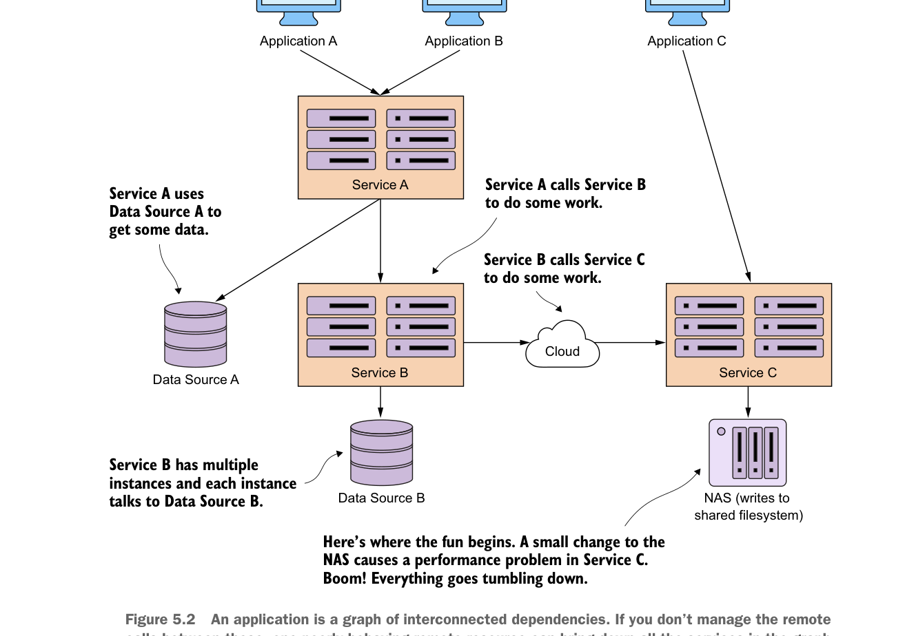

Một ứng dụng là đồ thị các phụ thuộc liên kết. Nếu bạn không quản lý các cuộc gọi từ xa giữa chúng, một tài nguyên từ xa hoạt động kém có thể làm sập tất cả các dịch vụ trong đồ thị.
Toàn bộ kịch bản này có thể được tránh nếu mẫu ngắt mạch (circuit breaker) được triển khai tại mỗi điểm gọi tới một tài nguyên phân tán (dù là cuộc gọi tới cơ sở dữ liệu hay cuộc gọi tới dịch vụ). Trong hình 5.2, nếu cuộc gọi tới Service C được triển khai bằng circuit breaker, thì khi service C bắt đầu hoạt động kém, circuit breaker cho cuộc gọi cụ thể đó tới Service C sẽ được kích hoạt và “fail-fast” mà không chiếm dụng thread. Nếu Service B có nhiều endpoint, chỉ các endpoint tương tác với cuộc gọi cụ thể đó tới Service C bị ảnh hưởng. Phần còn lại của chức năng Service B vẫn nguyên vẹn và có thể đáp ứng yêu cầu người dùng.